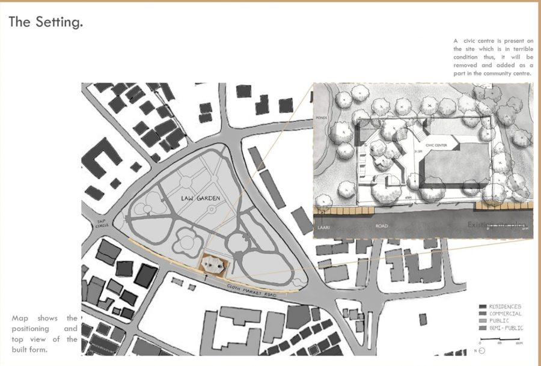
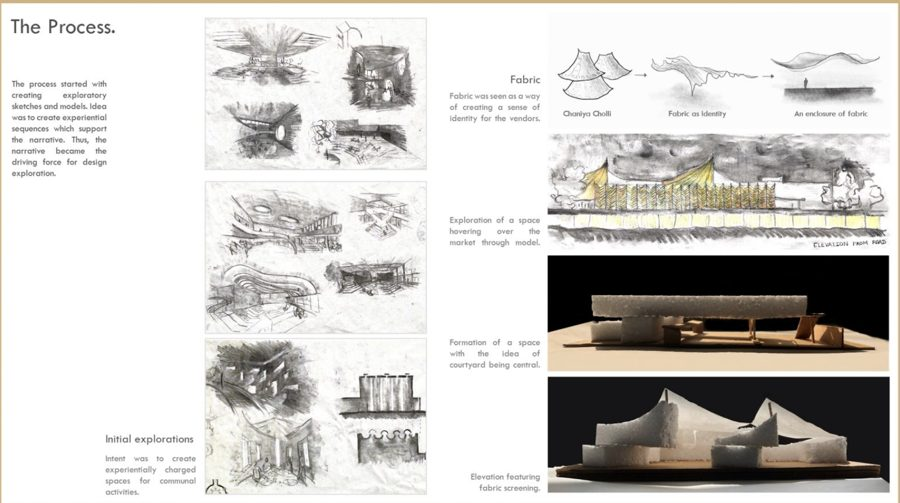
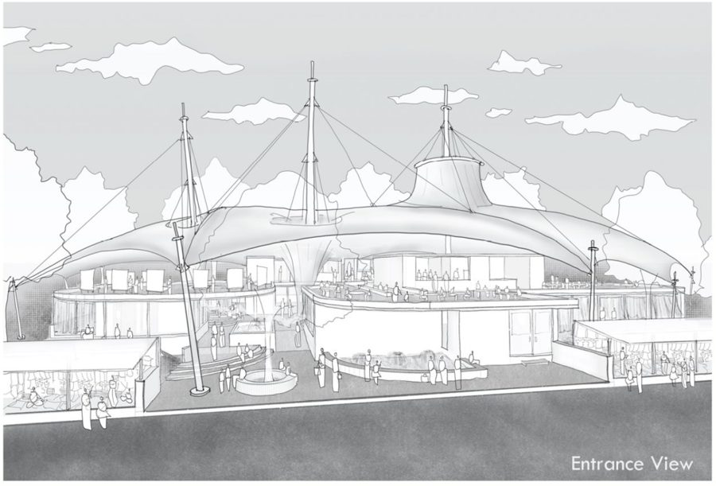
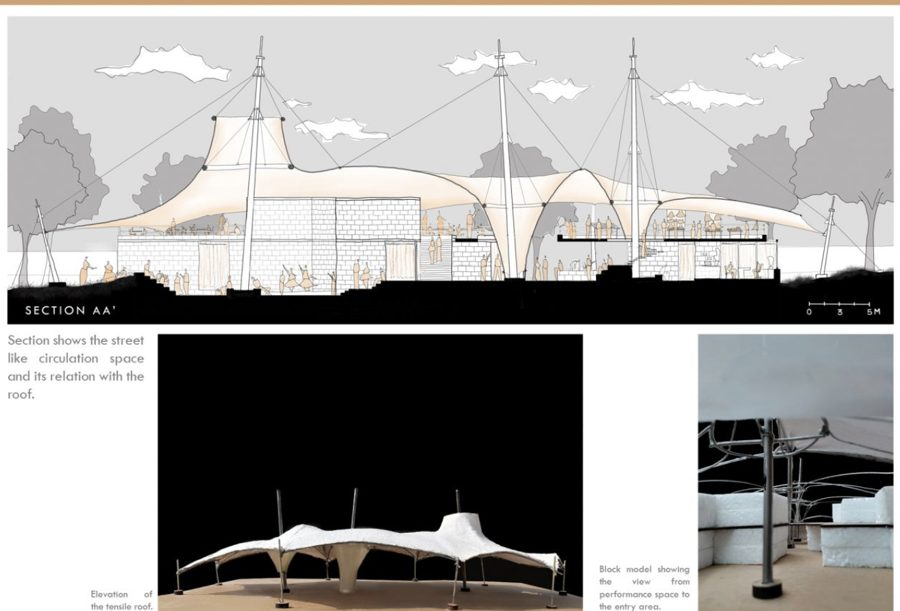
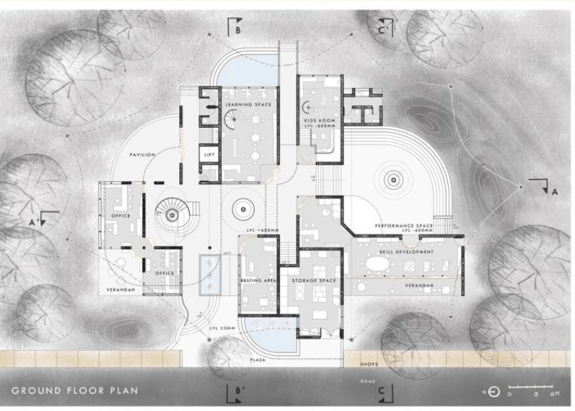
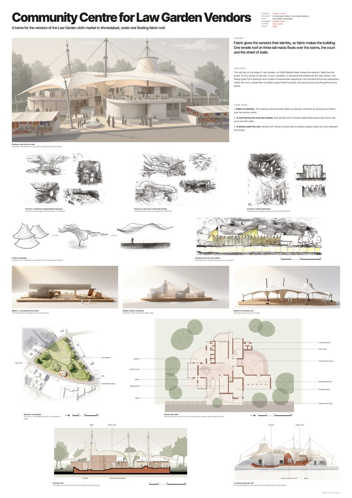

Guide · Presentation boards
How to make an A1 architecture presentation board: a step-by-step guide
The short answer
An A1 board (594 × 841 mm) works when a juror understands your project in under a minute. Start from one idea in one sentence, give the largest space to one hero image, then lay the drawings out in the order you would explain them: idea, hero view, plan, section, details. Use a simple grid, keep line weights and text consistent, write short captions, and leave empty space. Print it at A3 to check before you plot.
1. Write your idea in one sentence
Before you open any software, write the one thing your project does, in a sentence a stranger understands. For the sample project below it was: fabric gives the vendors their identity, so fabric makes the building. Everything on the board should help a juror see that sentence.
If you can't write it, the board will show it: drawings of equal size, competing for attention, and a jury that asks "so what is the project about?"
2. Choose one hero image
Juries look at the biggest image first. Give it to the drawing that shows your idea best, usually a perspective or a strong section, and let it take roughly a third of the board.
One hero beats three medium images. If two drawings feel equally important, pick the one that shows the idea; the other becomes supporting.
3. Plan the reading order
People read a board like a page: top left to bottom right. Put things in the order you would explain them out loud: title and idea, hero view, site, plan, section, then details, models and process.
Sketch the order as boxes on a sheet of paper first. It takes five minutes and saves hours of moving things around on screen.
4. Set a grid and margins
An A1 sheet is 594 × 841 mm (23.4 × 33.1 in), portrait or landscape. Leave a margin of about 20 to 25 mm and divide the rest into a few equal columns. Align every drawing and every block of text to those columns.
A grid is invisible when it works. Without one, a board looks busy even when it has little on it.
5. Build hierarchy with size, not colour
Make important things bigger and less important things smaller. Colour and borders are tempting ways to make something stand out, but they make a board noisy. Keep one accent colour, if any, and use it for the same purpose everywhere.
6. Clean and match the drawings
Drawings from different stages rarely match. Before layout, bring them into one family: the same line weights, the same poché for cut walls, the same tone for landscape and context.
Every plan and section needs a scale bar and a north point (plans) where it applies, and rooms or spaces labelled in the same type. Crop away empty paper so drawings sit tight in their boxes.
7. Keep text short
A board is not a report. Use one title, one short statement of the idea, and a caption of a line or two under each drawing that says what to look at, not what it is.
Use one or two typefaces at most. Make captions large enough to read from about a metre away at full size.
8. Leave empty space
White space is what lets a juror's eye rest and find the next thing. If a board feels crowded, remove a drawing rather than shrinking everything. The drawing you remove can go in the jury deck.
9. Check it at A3 before you plot
An A3 print is exactly half the size of A1 in each direction. Pin it up, step back a metre and look for three things: what you see first, whether the order makes sense, and whether the captions are still readable. Fix it at A3; plotting is slow and expensive.
10. Let the jury deck follow the board
If you also present slides, use the board's order: one slide per part, the same drawings, the same words. The board is the summary; the deck is the walk-through. Nobody should have to learn two versions of your project.
Before and after: a real student project
These are the six sheets a student brought for a community centre for the Law Garden market vendors in Ahmedabad, and the A1 board made from them, following the steps above: one idea (fabric), one hero view, then site, plan, section, sketches and models in reading order.






Sample project used with the student's permission.
Questions students ask
What size is an A1 presentation board?
A1 is 594 × 841 mm, or about 23.4 × 33.1 inches. Many schools in North America use 24 × 36 inches instead, which is close in size but a little wider. Check your brief.
Should an A1 board be portrait or landscape?
Either works. Portrait suits tall buildings and a top-to-bottom story; landscape suits long sections and site plans. Follow your brief if it says, and keep every board in a set the same way round.
How many drawings should go on one A1 board?
Usually six to ten: one hero image, the site plan, the key plan and section, and a few supporting drawings, sketches or model photos. If you need more, use a second board or the jury deck.
What font size should I use on an A1 board?
Large enough to read from about a metre away at full size. The simplest test is an A3 print: if you can read the captions comfortably at arm's length, they will work at A1.
What software is used for architecture presentation boards?
Most students use InDesign, Illustrator or Photoshop, and many now use PowerPoint, Canva or Figma. Studio FGA makes a first board from your drawings that you can keep editing in PowerPoint or InDesign.
More guides
- How to lay out an A1 architecture presentation boardMargins, a column grid, reading order and sizes: a step-by-step way to lay out an A1 architecture board so a jury reads it in the order you meant.
- Architecture jury presentation tips: what to show and what to sayHow to present at an architecture jury or crit: open with your idea, talk in the order of your board, point at drawings, and handle tough questions calmly.
- A1 sheet layout ideas for architecture students: 8 layouts that workEight A1 sheet layouts for architecture boards, from hero-and-strip to section band and exploded axonometric, with when each one works and when it fails.
- How to structure a 10–15 slide architecture jury or thesis presentationA slide-by-slide outline for a 10–15 slide architecture jury or thesis presentation, with rules for each slide and how the deck should follow your board.